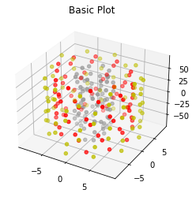
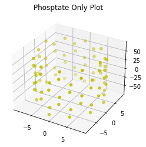
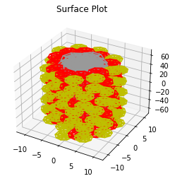

Making Single Strand DNA Models
It is recommended that you run this example inside a Jupyter environment rather than a VSCode or similar environment
This requires the mayavi jupyter extension jupyter nbextension install --py mayavi --user
[1]:
import sys
from pathlib import Path
try:
from fractaldna.dna_models import dnachain as dna
except (ImportError, ModuleNotFoundError):
# Path modifications if working straight out of the git repo.
sys.path.append(str(Path.cwd().parent.parent.parent))
from fractaldna.dna_models import dnachain as dna
from mayavi import mlab
# Disable this option for interactive rendering
mlab.options.offscreen = True
# Enable this option for an interactive notebook
# mlab.init_notebook()
Making and plotting a single DNA strand
[2]:
# Make a 40 base pair long DNA Strand
chain = dna.DNAChain("GTAC" * 10)
# Generate a simple Matplotlib visualisation
# The basic plot shows each molecule as a point
plot = chain.to_plot()
plot.gca().set_title("Basic Plot")
# You can also hide certain molecules (b = base, s=sugar, p=phosphate)
plot_phosphate = chain.to_plot(plot_b=False, plot_s=False, plot_p=True)
plot_phosphate.gca().set_title("Phosptate Only Plot")
# The surface plot plots each DNA molecule as a ball
plot_surface = chain.to_surface_plot()
plot_surface.gca().set_title("Surface Plot")
[2]:
Text(0.5, 0.92, 'Surface Plot')



Generating pretty plots with MayaVI
[3]:
# MayaVI can generate nicer plots, joining the strands together
plot = chain.to_strand_plot()
plot.scene.save_jpg("single_strand_strand_plot.jpg")
[4]:
# Or you can just plot the path of the entire block of dna, which looks better for a curved chain
chain = dna.TurnedDNAChain("GATC" * 40)
plot = chain.to_line_plot()
plot.scene.save_jpg("single_turned_strand_line_plot.jpg")
[5]:
plot = chain.to_strand_plot()
plot.scene.save_jpg("single_turned_strand_strand_plot.jpg")

Exporting a DNA strand as text
[6]:
# The chain can be converted to a text stream for saving
print(chain.to_text()[:1000], "...")
#NAME SHAPE CHAIN_ID STRAND_ID BP_INDEX SIZE_X SIZE_Y SIZE_Z POS_X POS_Y POS_Z ROT_X ROT_Y ROT_Z
Phosphate sphere 0 0 0 2.2823538668497223 2.2823538668497223 2.2823538668497223 -0.779890171626023 8.815584979134911 -333.92471210406507 0.0 -0.0 0.0
Sugar sphere 0 0 0 2.632139825596463 2.632139825596463 2.632139825596463 2.2598223909714656 6.737434473918255 -334.824704023257 0.0 -0.0 0.0
Guanine ellipse 0 0 0 3.6315030254147858 3.799953276546786 1.8872880374815397 0.6081393104497743 2.3215301459187865 -335.84706382820303 0.0 -0.0 0.0
Phosphate sphere 0 1 0 2.2823538668497223 2.2823538668497223 2.2823538668497223 -0.779890171626023 -8.815584979134911 -338.19297877073177 0.0 -0.0 0.0
Sugar sphere 0 1 0 2.632139825596463 2.632139825596463 2.632139825596463 2.2598223909714656 -6.737434473918255 -337.2929868515398 0.0 -0.0 0.0
Cytosine ellipse 0 1 0 3.597341307934331 3.066331331321459 1.7793608554794114 0.035998166959542686 -3.3433274569807168 -336.3976643350362 0.0 -0.0 0.0
Phosphate sphere 0 ...
[7]:
# Or a DataFrame
chain.to_frame()
[7]:
| name | shape | chain_idx | strand_idx | bp_idx | size_x | size_y | size_z | pos_x | pos_y | pos_z | rot_x | rot_y | rot_z | |
|---|---|---|---|---|---|---|---|---|---|---|---|---|---|---|
| 0 | Phosphate | sphere | 0 | 0 | 0 | 2.282354 | 2.282354 | 2.282354 | -0.779890 | 8.815585 | -333.924712 | 0.000000 | -0.000000 | 0.000000 |
| 1 | Sugar | sphere | 0 | 0 | 0 | 2.632140 | 2.632140 | 2.632140 | 2.259822 | 6.737434 | -334.824704 | 0.000000 | -0.000000 | 0.000000 |
| 2 | Guanine | ellipse | 0 | 0 | 0 | 3.631503 | 3.799953 | 1.887288 | 0.608139 | 2.321530 | -335.847064 | 0.000000 | -0.000000 | 0.000000 |
| 3 | Phosphate | sphere | 0 | 1 | 0 | 2.282354 | 2.282354 | 2.282354 | -0.779890 | -8.815585 | -338.192979 | 0.000000 | -0.000000 | 0.000000 |
| 4 | Sugar | sphere | 0 | 1 | 0 | 2.632140 | 2.632140 | 2.632140 | 2.259822 | -6.737434 | -337.292987 | 0.000000 | -0.000000 | 0.000000 |
| ... | ... | ... | ... | ... | ... | ... | ... | ... | ... | ... | ... | ... | ... | ... |
| 1 | Sugar | sphere | 0 | 0 | 159 | 2.632140 | 2.632140 | 2.632140 | 337.292987 | 5.809905 | 4.092044 | 1.570796 | 0.633555 | 1.570796 |
| 2 | Cytosine | ellipse | 0 | 0 | 159 | 3.597341 | 3.066331 | 1.779361 | 336.397664 | 2.008306 | 2.673171 | 1.570796 | 0.633555 | 1.570796 |
| 3 | Phosphate | sphere | 0 | 1 | 159 | 2.282354 | 2.282354 | 2.282354 | 333.924712 | -5.847478 | -6.643024 | 1.570796 | 0.633555 | 1.570796 |
| 4 | Sugar | sphere | 0 | 1 | 159 | 2.632140 | 2.632140 | 2.632140 | 334.824704 | -2.167395 | -6.767734 | 1.570796 | 0.633555 | 1.570796 |
| 5 | Guanine | ellipse | 0 | 1 | 159 | 3.631503 | 3.799953 | 1.887288 | 335.847064 | -0.884260 | -2.231013 | 1.570796 | 0.633555 | 1.570796 |
960 rows × 14 columns
[ ]: